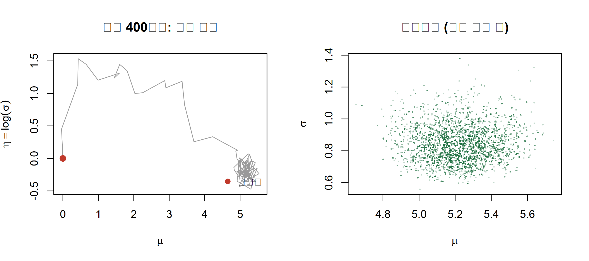

사후분포를 정상분포로 갖는 마르코프 연쇄를 직접 만들어, 켤레도 격자도 통하지 않는 문제에서 사후표본을 얻습니다.
Author
Eunji Ha
Published
September 21, 2026
학습 목표
사후분포에서 직접 표집할 수 없을 때 마르코프 연쇄를 만들어 표집하는 아이디어를 설명할 수 있다.
Metropolis 수용확률에서 정규화상수가 소거되는 이유를 설명할 수 있다.
Metropolis–Hastings와 Gibbs 표집을 base R로 직접 구현할 수 있다.
번인, 제안 표준편차 튜닝, 수용률, 자기상관을 근거로 체인의 상태를 진단할 수 있다.
랜덤워크 MH가 느려지는 상황을 설명하고 다음 단계인 HMC의 필요성을 말할 수 있다.
들어가며: 격자가 끝나는 지점
W4에서는 RNA-seq 이형접합 부위의 대립유전자 비율 \(\theta\)를 격자 근사(grid approximation)로 구했습니다. 모수가 하나였기 때문에 로짓 스케일 축을 2,000칸으로 잘라 각 칸의 비정규화 사후밀도를 계산하는 것으로 충분했습니다. 그런데 실제 분석은 모수가 하나로 끝나지 않습니다. 시료마다 종양순도가 다르고, 시퀀싱 오류율이 따로 있고, 유전자별 발현 모형이라면 평균과 분산이 동시에 미지입니다. 모수가 \(d\)개면 격자는 \(K^d\)칸으로 불어나, 칸을 100개씩만 써도 모수 5개에 100억 칸이라 계산할 수 없습니다. 이번 주에는 격자를 버리고 사후분포를 정상분포로 갖는 마르코프 연쇄를 설계해 오래 돌리는 방법을 씁니다.
아이디어: 뽑을 수 없으면 돌아다니게 하자
사후분포 \(p(\theta \mid y)\)에서 독립표본을 뽑는 방법을 모른다고 합시다. 대신 모수 공간을 돌아다니는 규칙을 하나 만듭니다. 이 규칙은 두 가지만 지키면 됩니다. 첫째, 오래 돌렸을 때 체류 시간의 분포가 \(p(\theta \mid y)\)에 수렴할 것. 둘째, 한 걸음 옮기는 계산이 값싸고 비정규화 사후밀도만으로 가능할 것. 그러면 체인이 방문한 값들을 그대로 사후표본처럼 쓸 수 있습니다. 독립표본은 아니지만(이웃한 값끼리 상관이 있습니다) 평균, 분위수, 확률 계산에는 그대로 씁니다. 이것이 마르코프 연쇄 몬테카를로(Markov chain Monte Carlo, MCMC)입니다. 용어 네 개만 정리합니다. 전이커널(transition kernel)\(T(\theta \to \theta')\)는 현재 \(\theta\)에서 다음 \(\theta'\)로 갈 확률(밀도)입니다. 정상분포(stationary distribution)\(\pi\)는 이미 \(\pi\)에서 뽑힌 상태에 커널을 한 번 적용해도 여전히 \(\pi\)인 분포입니다. 세부균형(detailed balance) 은 정상분포임을 보장하는 충분조건으로, 확인하기 쉬워 알고리즘 설계의 출발점입니다. 에르고딕성(ergodicity) 은 어디서 출발하든 같은 정상분포에 도달하고 시간평균이 공간평균으로 수렴하는 성질입니다.
핵심 직관
MCMC는 사후분포를 지형으로 봅니다. 사후밀도가 높은 곳은 골짜기, 낮은 곳은 언덕입니다. 체인은 무작위로 한 걸음 내딛고 골짜기 쪽이면 거의 항상 받아들이며 언덕 쪽이면 가끔만 받아들입니다. 이 단순한 규칙만으로 체인이 머무는 빈도가 사후밀도에 비례하게 됩니다.
수식으로 보기: 정상성과 세부균형
정상성은 커널을 한 번 적용해도 분포가 변하지 않는다는 뜻입니다. \[ \pi(\theta') = \int \pi(\theta)\, T(\theta \to \theta')\, d\theta \] 세부균형은 이보다 강한 조건입니다. \[ \pi(\theta)\, T(\theta \to \theta') = \pi(\theta')\, T(\theta' \to \theta) \] 양변을 \(\theta\)에 대해 적분하면 우변이 \(\pi(\theta')\int T(\theta'\to\theta)d\theta = \pi(\theta')\)이므로 정상성이 따라나옵니다. 에르고딕성까지 갖추면 시간평균이 사후기댓값으로 수렴합니다. \[ \frac{1}{S}\sum_{s=1}^{S} g(\theta^{(s)}) \;\xrightarrow{\;S \to \infty\;}\; \mathbb{E}_\pi[g(\theta)] \] 기호: \(\pi\)는 목표 분포이며 여기서는 항상 사후분포 \(p(\theta \mid y)\)입니다. \(g\)는 관심 있는 요약함수로, 사후평균이면 \(g(\theta)=\theta\)입니다.
Metropolis 알고리즘
대칭(symmetric) 제안분포를 하나 고릅니다. 가장 흔한 선택은 현재 위치를 중심에 둔 정규분포, 즉 랜덤워크(random walk) 제안입니다. 한 걸음은 이렇게 진행됩니다. (1) 현재 위치 \(\theta\)에서 \(\theta' \sim \mathrm{Normal}(\theta, \tau^2)\)를 제안합니다. (2) 수용확률 \(\alpha = \min\{1,\ p(\theta' \mid y)/p(\theta \mid y)\}\)를 계산합니다. (3) 확률 \(\alpha\)로 \(\theta'\)로 이동하고, 아니면 현재 값을 한 번 더 기록합니다. (3)에서 기각되었을 때 아무것도 기록하지 않는 것이 아니라 현재 값을 다시 기록한다는 점이 중요합니다. 머무는 것도 연쇄의 정당한 한 걸음입니다.
정규화상수가 소거됩니다
사후분포는 \(p(\theta \mid y) = p(y \mid \theta) p(\theta) / p(y)\)이고 골치 아픈 부분은 언제나 분모의 주변가능도(marginal likelihood) \(p(y) = \int p(y\mid\theta)p(\theta)d\theta\)입니다. 그런데 수용확률은 비율입니다. \[ \frac{p(\theta' \mid y)}{p(\theta \mid y)} = \frac{p(y\mid\theta')p(\theta') / p(y)}{p(y\mid\theta)p(\theta) / p(y)} = \frac{p(y\mid\theta')\,p(\theta')}{p(y\mid\theta)\,p(\theta)} \]\(p(y)\)가 위아래에서 그대로 지워집니다. 즉 비정규화 사후밀도만 계산할 수 있으면 MCMC를 돌릴 수 있습니다. 베이지안 계산에서 가장 어려운 적분을 건드리지 않고 지나갈 수 있다는 것이 MCMC가 실용적인 이유입니다.
Metropolis–Hastings: 비대칭 제안의 보정
제안분포가 대칭이 아니면(예: 양수 모수에 로그정규 제안을 쓰는 경우) 한쪽 방향으로 가기가 반대 방향보다 쉬워집니다. 그 쏠림을 되돌리는 것이 Hastings 보정항입니다.
로그 스케일. 관측이 수백 개만 되어도 가능도는 \(10^{-300}\) 아래로 내려가 배정밀도에서 0이 됩니다(수치적 언더플로, underflow). 그러면 비율이 0/0, 즉 NaN이 됩니다. 항상 로그밀도를 더하고 비교는 log(runif(1)) < lp_prop - lp_cur 형태로 합니다. 번인(burn-in/warmup). 초기값은 보통 사후분포 중심에서 멀리 떨어져 있습니다. 체인이 목표 영역에 들어오기 전 구간은 정상분포에서 나온 표본이 아니므로 버립니다. 전체의 10~50퍼센트 정도가 보통입니다.
씨닝(thinning). 자기상관을 줄이려고 10개마다 하나씩 남기는 방식인데 대부분 불필요합니다. 표본을 버리면 몬테카를로 오차가 오히려 커지기 때문입니다. 저장 공간이 모자라거나 사후처리 비용이 클 때만 씁니다. 제안 표준편차 튜닝. 너무 작으면 거의 다 수용되지만 걸음이 짧아 제자리를 맴돌고, 너무 크면 대부분 기각되어 같은 값에 오래 붙어 있습니다. 둘 다 자기상관이 높아집니다. 랜덤워크 MH의 이론적 최적 수용률은 1차원에서 약 44퍼센트, 차원이 커지면 약 23퍼센트로 알려져 있습니다(Roberts, Gelman & Gilks, 1997). 20~50퍼센트면 대체로 무난합니다.
흔한 오해
수용률이 높을수록 좋은 체인이라고 생각하기 쉽지만 반대입니다. 수용률 95퍼센트는 대개 제안 폭이 너무 좁아 체인이 거의 움직이지 않는다는 신호입니다. 보아야 할 것은 수용률 자체가 아니라 trace plot이 잘 섞이는지, 자기상관이 빨리 떨어지는지입니다. 수용률은 그 둘을 조정하는 손잡이일 뿐입니다.
Gibbs 표집: 조건부만 알면 된다
모수가 여럿일 때 전체 사후분포에서 한꺼번에 뽑기는 어려워도, 나머지를 모두 고정했을 때 하나의 조건부분포는 익숙한 분포가 되는 경우가 많습니다. 이것을 완전조건부분포(full conditional distribution)라고 합니다. Gibbs 표집(Gibbs sampling)은 모수를 하나씩 차례로 그 완전조건부에서 뽑습니다. 제안도 수용/기각도 없어 모든 걸음이 항상 받아들여집니다. 사실 Gibbs는 수용확률이 항상 1이 되도록 제안분포를 고른 MH의 특수한 경우입니다.
Gibbs는 항상 좌표축 방향으로만 움직입니다. 두 모수의 사후 상관이 0.99처럼 크면 대각선으로 길게 누운 골짜기를 계단식으로 조금씩만 기어갑니다. 수용률은 100퍼센트인데 체인은 사실상 정체됩니다. 실습 (5)에서 직접 봅니다.
실습: base R로 직접 구현
(1) 1모수 Metropolis: 비켤레 이항 예제
W4와 완전히 같은 예제입니다. 이형접합 부위 하나에서 read 40개를 관측했고(가상의 데이터), 대립유전자 특이적 발현(allele-specific expression)을 보려면 대립유전자 비율 \(\theta\)의 사후분포가 필요합니다. 여러 부위를 나중에 하나의 회귀로 묶을 계획이라 로짓(logit) 스케일 모수 \(\beta = \log\{\theta/(1-\theta)\}\)에 정규 사전 \(\mathrm{Normal}(0, 1.5^2)\)를 주었고, 그 순간 켤레성이 사라졌습니다. W4에서는 이 비정규화 사후를 격자·라플라스·기각표집·중요도표집으로 우회했습니다. 이번에는 같은 함수를 MH에 그대로 넣습니다. \(\beta\)는 실수 전체를 지지집합으로 가지므로 랜덤워크 제안이 경계에 걸릴 일도 없습니다.
가운데 열만 백색잡음처럼 오르내리고 자기상관도 빨리 0으로 떨어집니다. 왼쪽은 수용률이 거의 1인데도 걸음이 짧아 느리게 표류하고, 오른쪽은 대부분 기각되어 수평선 구간이 길게 이어집니다.
(3) 2모수 MH: 정규분포의 평균과 로그표준편차
어떤 유전자의 로그2 정규화 발현값 30개를 관측했다고 합시다(가상의 데이터). 평균 \(\mu\)와 표준편차 \(\sigma\)가 모두 미지입니다. \(\sigma > 0\) 제약을 자동으로 만족시키려고 \(\eta = \log \sigma\)로 두고 제약 없는 공간에서 랜덤워크를 돌립니다.
set.seed(5)y_expr <-rnorm(30, mean =5.2, sd =0.8) # 가상의 로그2 발현값m0 <-5; s0 <-3; a0 <-2; b0 <-2# 사전분포 초모수log_dinvgamma <-function(x, a, b) a *log(b) -lgamma(a) - (a +1) *log(x) - b / x# (mu, eta = log sigma) 공간에서의 비정규화 로그 사후밀도log_post_normal <-function(par) { mu <- par[1]; sigma <-exp(par[2])sum(dnorm(y_expr, mu, sigma, log =TRUE)) +dnorm(mu, m0, s0, log =TRUE) +# sigma2 = exp(2*eta) 변수변환의 야코비안 |d sigma2 / d eta| = 2*exp(2*eta)log_dinvgamma(sigma^2, a0, b0) +log(2) +2* par[2]}set.seed(42)fit2 <-run_mh(log_post_normal, c(0, 0), c(0.35, 0.30), 10000)post_mh <- fit2$draws[2001:10000, ] # 앞 2000회 번인 폐기cat("수용률:", round(fit2$acc_rate, 3), "(다차원 목표 약 0.23) / mu",round(mean(post_mh[, 1]), 3), "/ sigma", round(mean(exp(post_mh[, 2])), 3), "\n")
수용률: 0.237 (다차원 목표 약 0.23) / mu 5.222 / sigma 0.837
par(mfrow =c(1, 2))plot(fit2$draws[1:400, ], type ="l", col ="grey60", main ="초기 400걸음: 번인 구간",xlab =expression(mu), ylab =expression(eta ==log(sigma)))points(0, 0, pch =19, col ="#c0392b", cex =1.2)legend("bottomright", "초기값", pch =19, col ="#c0392b", bty ="n")plot(post_mh[, 1], exp(post_mh[, 2]), pch =16, cex =0.3,col =adjustcolor("#1a6e3c", alpha.f =0.25), main ="사후표본 (번인 제거 후)",xlab =expression(mu), ylab =expression(sigma))

왼쪽에서 체인이 초기값 \((0,0)\)에서 출발해 사후 영역으로 빠르게 이동한 뒤 그 안에서 맴도는 모습이 보입니다. 이 이동 구간이 번인으로 버려야 하는 부분입니다.
같은 시드에서 두 체인이 한 값도 다르지 않습니다. 상수는 수용 판정에 전혀 개입하지 않습니다.
문제 2. 아래의 간단한 유효표본수(effective sample size, ESS) 함수를 써서 제안 표준편차에 따라 ESS가 어떻게 달라지는지 비교하십시오.
풀이
ESS는 자기상관 때문에 잃어버린 정보를 반영해 독립표본 몇 개에 해당하는지를 재는 값입니다. 자기상관이 처음 음수가 되기 직전까지 더합니다. 아래 ess_simple()은 감을 잡기 위한 단순화 버전입니다. 체인 split, 시차 0부터의 짝 합, Geyer 초기 단조 수열 절단까지 갖춘 정확한 정의는 W6에서 ess_basic()으로 다루며, 같은 체인에서도 두 값은 다르게 나옵니다. W4의 중요도표집 ESS \((\sum w)^2/\sum w^2\) 는 이름만 같을 뿐 가중치가 얼마나 고른지를 재는 다른 양이어서, 자기상관 기반 MCMC ESS와 직접 비교할 수 없습니다.
ess_simple <-function(x, max_lag =200) { rho <-acf(x, lag.max =min(max_lag, length(x) -1), plot =FALSE)$acf[-1] k <-which(rho <0)[1] -1; if (is.na(k)) k <-length(rho) # 처음 음수 직전까지if (k <1) return(length(x))length(x) / (1+2*sum(rho[1:k]))}set.seed(42)res <-t(sapply(c(0.04, 0.2, 0.8, 3, 8), function(s) { f <-run_mh(log_post_binom, 0, s, 6000) d <-drop(f$draws)[1001:6000]c(prop_sd = s, acc_rate = f$acc_rate, ess =ess_simple(d),efficiency =ess_simple(d) /5000)}))round(res, 3)
사후분포에서 직접 뽑을 수 없으면 그 사후분포를 정상분포로 갖는 마르코프 연쇄를 만들어 오래 돌립니다. 세부균형을 만족하도록 설계하면 정상분포가 보장됩니다.
Metropolis의 수용확률은 사후밀도의 비율이므로 주변가능도 \(p(y)\)가 소거됩니다. 비정규화 사후밀도만 계산할 수 있으면 충분하고, 제안이 비대칭이면 Hastings 보정항을 곱합니다.
계산은 전부 로그 스케일로 하고 번인 구간은 버리며 씨닝은 보통 필요하지 않습니다. 랜덤워크 제안 표준편차는 수용률 20~50퍼센트(1차원 약 44, 다차원 약 23퍼센트)를 목표로 맞추고 trace plot, 자기상관, ESS로 확인합니다.
Gibbs는 완전조건부에서 차례로 뽑으므로 기각도 튜닝도 없지만, 조건부를 유도할 수 있는 모형에만 쓰이고 모수 간 상관이 크면 축방향으로만 기어갑니다.
다음 시간
랜덤워크는 목표 지형의 모양을 모른 채 눈을 감고 걷습니다. 차원이 높아지면 이 방식은 급격히 비효율적입니다. W6. HMC와 수렴 진단에서는 로그 사후밀도의 기울기(gradient)로 방향을 잡는 해밀토니안 몬테카를로(Hamiltonian Monte Carlo, HMC)를 다루고, 이번 주에 손으로 짠 것과 같은 모형을 패키지로 다시 적어 봅니다. 함께 볼 진단 지표로 \(\hat{R}\), 유효표본수, 발산 전이(divergent transition)도 소개합니다.